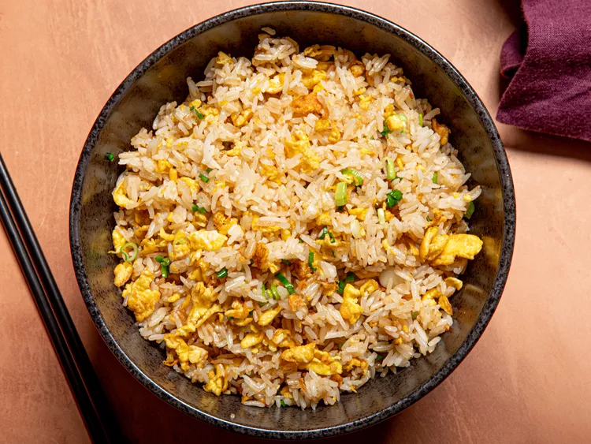

Egg Rice
Back to Main Page

Description
Egg fried rice is a classic, globally beloved staple of Chinese cuisine (specifically originating from Southern China, most famously Yangshou/Yangzhou). At its core, it is a high-heat stir-fry dish that transforms simple, humble components—typically leftover rice, eggs, aromatics, and soy sauce—into a highly fragrant, savory, and satisfying meal.
Ingredients
- Day-old cooked rice (chilled)
- Eggs
- Vegetable or peanut oil
- Garlic
- Green onions (scallions)
- Light soy sauce
- Toasted sesame oil
- White pepper
- Salt
- Carrots & peas (optional)
Steps
- Heat oil in a wok or large pan over high heat
- Sauté garlic and the white parts of the green onions for 30 seconds
- Add carrots and peas, stir-frying for 2 minutes until softened
- Push veggies aside, pour whisked eggs into the empty space, and scramble gently
- Add cold rice, breaking up any clumps with your spatula
- Toss and fry everything together on maximum heat for 3 minutes
- Drizzle soy sauce around the edges of the pan and mix well
- Season with white pepper, salt, the green onion tops, and a splash of sesame oil
- Toss once more and serve hot